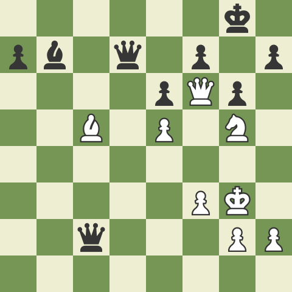

체스는 계획만으로 승리를 이끌수 없다. 물론 계획을 세우는것은 중요하다. 무턱대고 수를 움직이면 불리한 상황이 더 빨리 다가오기 때문이다. 그렇지만 그런 계획을 하나만 정해놓는 것도 패배의 지름길이다. 왜냐하면 계획한 것이 한번 틀어지게 되면 그 상황을 만회할 또다른 계획이 없기 때문이다.
그래서 한가지의 계획만으로는 체크매이트를 절대로 만들수 없다. 따라서 자신의 수를 어떻게 이어가는지를 정하는 계획을 세우는것도 중요하지만 상대방의 수를 한번 생각해보고 경우의 수에 따라 그에 대응하는 수를 계획해야 한다. 그리고 한가지의 계획만 가지는것은 벅찰것이니 적어도 3개 이상의 계획을 세우는것이 중요하다고 생각한다.
체스에 관한 나의 생각으로 미루어봤을때 체스는 인생과 비슷하다고 생각한다. 왜냐하면 각자의 인생에는 한가지 또는 상황에 따라서 수십가지의 목표가 있다. 그 목표들은 체크메이트이고 목표들을(체크매이트를) 이루기 위해 각자가 생각하는 계획이 있을것이다. 만약에 자신이 계획한것이 틀어지면 좌절하고 만다. 왜냐하면 목표를 이루기 위한 계획을 하나만 정해놓았고 결정적으로 그 계획 하나가 전부인것으로 인식하기 때문이다. 그러니까 체스에서 처럼 계획을 3개 이상 가져보자. 